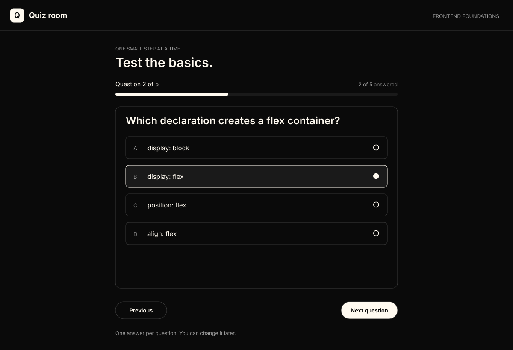
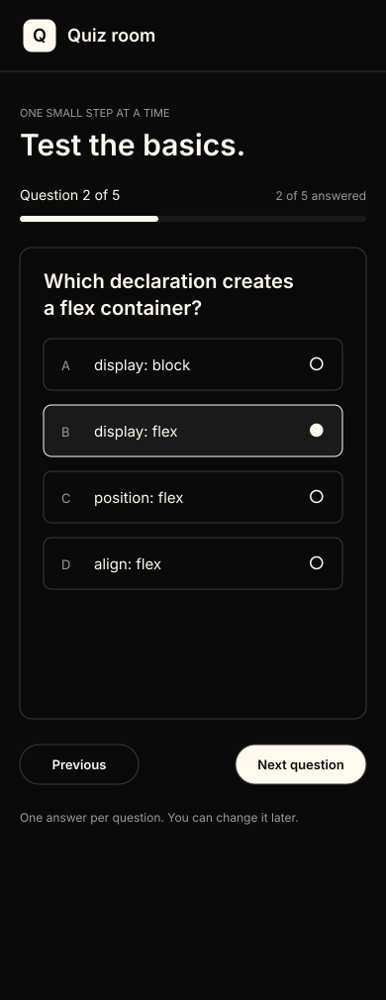
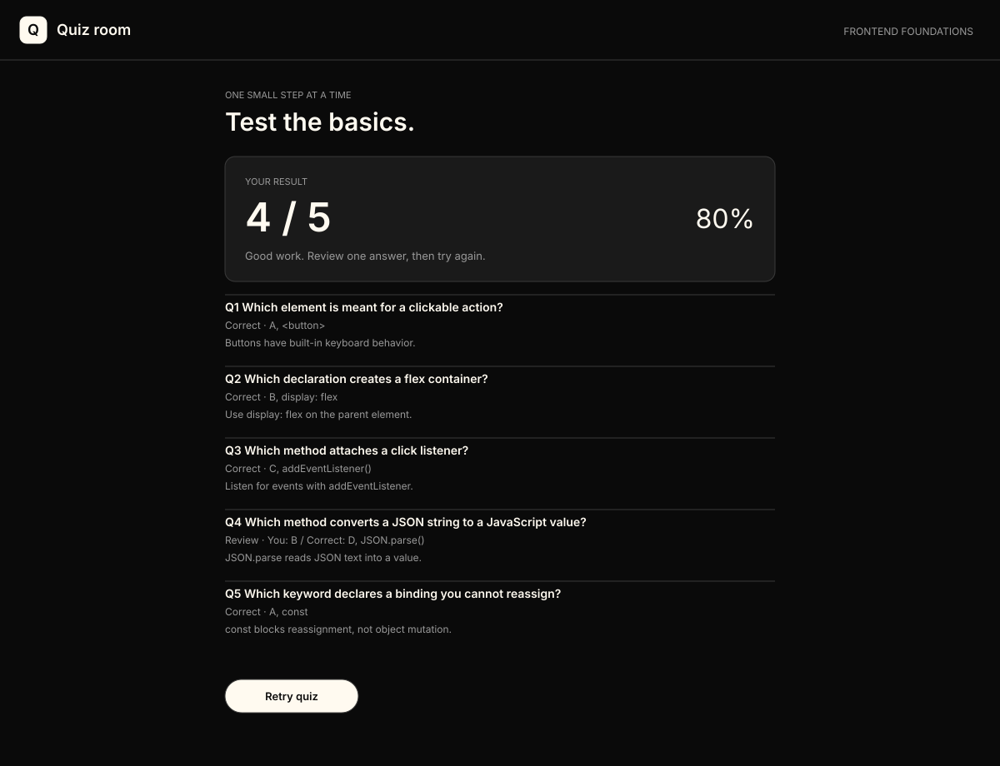

Eswar writes the application. These are
requirements, visual targets, and hints. Create your own
solution/index.html, solution/style.css,
and solution/script.js in the chosen question folder.
Recreate the interface with HTML and CSS; a screenshot or SVG
embedded as the whole page does not satisfy the exercise.
Checked: . These are your own
manual checks, not an automatic grader.
Progress is local to this page and browser. Export it before
moving or renaming files. Each question has its own progress; it
does not synchronize with the other guides or people.
Explore this guide’s roadmap
No matching instructions. Clear the search to show everything.
Understand the question
Build a quiz Eswar can take from start to finish. Show one
question at a time, retain choices when navigating, and
calculate the result from the answers actually selected.
Your deliverable
Practice focus: DOM events · state ·
conditional rendering.
Budget about 4–6 focused hours, including debugging and manual
checks. If you are new to the concepts, allow more time. Build a
static layout first, add behavior next, then test the failure
and empty states.
Rules for your attempt
Write the app using only HTML, CSS, and plain JavaScript. No
React, Tailwind, Bootstrap, UI kits, copied templates, or
AI-generated implementation.
Use actual forms, buttons, labels, and appropriate semantic
elements. A placeholder is not a label. Use addEventListener
rather than inline event attributes.
Make it work at 1200px desktop and 390px phone width without
horizontal page overflow. Match layout, hierarchy, spacing,
and states; system-font differences are acceptable.
Use visible keyboard focus, logical tab order, and text for
success/errors. Render user-entered text as text, so markup
typed into a field is displayed literally.
Make every core control work. Extra decoration does not
replace missing behavior. Keep the browser console free of app
errors.
AI is allowed for concepts, syntax, decisions, or a small hint
about your own attempt. Eswar writes the HTML, CSS,
JavaScript, and fixes himself.
Use the desktop, phone, and alternate-state SVGs as visual
references. The captions tell you exactly which actions produce
each picture.
Three visual targets

Desktop · Question 2 of 5, with B selected. Question 1 has
already been answered, so the header says 2 of 5 answered. The
progress bar represents answered questions.
Open full-size SVG.

Phone · The same question and selection at 390px. Options
and navigation fit without sideways scrolling.
Open full-size SVG.

Another state · After answering A/B/C/B/A, show 4/5 and 80%.
Q4 is wrong; its correct answer is D, JSON.parse().
Open full-size SVG.
Reset to the initial fixtures before each independent row unless
the row explicitly continues a previous action. Use a separate
test storage key when you need a clean first visit.
Exact manual test cases
Action / setup
Expected result
Select A/B/C/D/A and submit
5/5 and 100%; every review row says Correct.
Select B/A/A/A/B and submit
0/5 and 0%; all five review rows show the correct
choice.
Select A/B/C/B/A
4/5 and 80%; only q4 needs review.
Skip q2; answer the other four; submit
Submission blocked; 1 missing; q2 becomes current and
receives focus.
Answer q1, Next, Previous, replace q1 answer
Previous choice is displayed; answered count remains 1.
Retry after viewing a result
q1, no selected options, 0/5 answered; no stale score or
review.
Try a small version first. Open one hint, work on your own
attempt, and come back for the next hint if needed.
Progressive hints
Hint 1 · What state would survive a re-render?
Think about the current question index and a separate answer
choice for each question ID. The DOM is a view of that state.
Hint 2 · How do you separate position from completion?
Derive answered count from stored answers. Next changes
position; selecting a radio changes one answer. Score is
derived only from a completed attempt.
Hint 3 · Where should rendering stop?
Keep quiz view and result view distinct. A retry should
reset all attempt state before rendering q1 again.